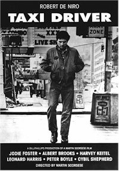
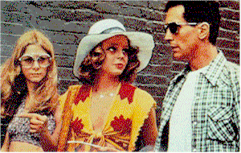
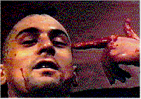

|
Taxi Driver
feature by Carrie
Gorringe, 1995
|  |
|
I don't think there is any difference between fantasy and reality in
the way these should be approached in a film. Of course, if you live that way, you are
clinically insane. But I can ignore the boundary on film...
-- Martin Scorsese (1989)
...The line dividing life and art can be invisible. After seeing
enough hypnotizing movies and reading enough magical books, a fantasy life develops which
can either be harmless or quite dangerous...
-- John Hinckley Jr. (1981)
|
In 1976, Martin Scorsese's Taxi
Driver was released and became his first financially successful feature. Five years
later, the film found itself in the unfortunate position of being swallowed whole by the
controversy surrounding the link between would-be presidential assassin Hinckley and his
obsession with Jodie Foster. It became prima facie evidence for those on the political
right who were convinced of the causal relationship between the depiction of fictional
violence and its translation into real life, so much so that it is now almost impossible
to separate Taxi Driver from this discourse.
What has been forgotten, as its recent restoration and re-release indicate, are the
merits of the film in its own right. Watching Taxi Driver, one is reminded of how
good American filmmaking can be, when all of the necessary elements fall into the hands of
someone with an instinct for how they should be deployed. What Arthur Penn did to the
gangster film in Bonnie and Clyde and Sam Peckinpah did for the Western in The Wild-Bunch, Scorsese did for the urban melodrama.
Working from Schrader's insightful script, Scorsese adeptly fused violence and narrative
into a seamless and coherent whole, not for the sake of titillation, but to use the
combination as a metaphor for social dystopia. Scorsese was no stranger to this concept;
indeed, the themes contained in Taxi Driver had already appeared in a more
nascent form in Boxcar Bertha (1972) and most obviously in Mean Streets
(1973). All of Scorsese's fictional films, even the more mainstream Alice Doesn't Live
Here Anymore (1974), contain at their center the image of an alienated individual who
seeks to be reintegrated in some way, usually failing in the attempt. Depending on the
intent that Scorsese has in mind, the individual either finds a bitter sense of nobility
or descends into the realm of self-parody (as Jake La Motta does in 1980's Raging Bull).
Regardless of whether one loves his work or hates it, one cannot deny Scorsese's influence
upon the direction taken by modern cinema, even if the influence has been weakened in
lesser hands -- for all of the flash that younger filmmakers like Tarantino and Rodriguez
bring to their violence-soaked work -- and there is no denying that the work is still
entertaining -- a curious emptiness at the core of their work seems always to be present,
almost as if the concept of social alienation is less a theme to be examined for its
relevance than simply the way things are; starting from this pseudo-existential position
(an acceptance of the absurdity of life without the sense of personal responsibility that
is part of true existentialism), their characters have nowhere else to go but into a
self-defeating and/or ironic nihilism. While such explorations are relevant from time to
time, their inherent lack of depth can render them monotonous if directors make the
mistake of confusing a thematic rut with an auteurist groove.
On its surface, Taxi
Driver deals with the life of one Travis Bickle, (De Niro), a Vietnam vet who finds
that his life has been turned upside down after returning stateside. His recurring bouts
of insomnia and sense of isolation (he obviously suffers from what would later be referred
to as Post-Traumatic Stress Disorder) lead him to take a job driving cabs at night; as he
tells his interviewer, he might as well make money since he can't sleep. But what he sees
on his automotive meanderings is repugnant to him; many of his customers represent the
lowest rungs of society: prostitutes, adulterous husbands, and, in a most unforgettable
scene, one particular customer (played by Scorsese) provides the audience with a graphic
how-to lesson for enacting poetic justice upon an unfaithful wife (it's a performance that
has endeared Scorsese to feminists ever since). Since Travis has promised the cab company
that he will drive anywhere, at anytime, his likelihood of seeing the best of human nature
is fairly slim. So, he tries to create an extra-occupational life for himself by striking
up relationships with women on opposite ends of the spectrum, although he doesn't seem to
possess the slightest amount of social skills. His first attempt revolves around Betsy
(Shepherd), whose political ambitions are reflected in her ice-goddess demeanor. When she
rejects him (because he commits the cardinal blunder of taking her to a hard-core porn
film on their first date), he encounters Iris (Foster), a prepubescent prostitute who is
desperately trying to escape from her pimp, Sport (Keitel). Travis is touched by her
plight and resolves to assist her, despite her later unwillingness to cooperate.
Meanwhile, Betsy refuses to accept his repeated attempts to apologize, and he begins to go
psychotic under the force of various pressures. Travis purchases an assortment of
semi-automatic guns (and, taking a cue from the husband from wounded pride, includes a .44
Magnum in his formidable arsenal), takes up a rigorous physical training regimen, shapes
his hair into a bristly-looking Mohawk, and decides to assassinate the candidate for whom
Betsy is working. Thwarted in his attempt, Travis then goes after Sport, killing him and a
Mafioso who just happened to be in the wrong place at the wrong time in a spray of
bullets. After this massacre, Travis tries to kill himself in Iris's room, but has wasted
so many bullets that he has none left with which to waste himself. Nevertheless, his
bloodbath turns him into a media hero, and Betsy suddenly discovers an interest in him. In
turn, Travis rejects her, and he drives off into the night toward an uncertain future.
Below this narrative surface, Taxi Driver eloquently addresses the massive
social and political changes that had taken place in the post-World War Two era; more
specifically, the film addressed the consequences of these changes. Foremost among them
was the decay of the inner-city core, the result of waves of suburban
"immigration" by middle-class whites, seeking not only more property but
"relief" from the taxation "pressures" of having to support ghetto
regions populated almost exclusively by minorities. Since the 60s had been scarred by the
Vietnam War and three assassinations, the contexts in Taxi Driver were, at the
time of the film's original release, like newly-opened wounds in American society.
American society seemed to be on the verge of collapse, and the life of Travis Bickle
seemed to capture the frustrations of an entire group of Americans who felt not only
alienated, but powerless to stop the collapse. Much of Taxi Driver centers around
Bickle's desire to stop feeling isolated. But it isn't only Vietnam that has isolated him;
his most essential problem stems from the shortage of options available to him on a
professional basis. When the subject of education comes up in his interview with the cab
company, his reply is vague. "Here and there...", he admits sheepishly, before
his voice trails off. What makes the film so prescient as a historical document is the
fact that many of the issues it raised are still relevant; more depressing has been
American society's inability to rectify these situations twenty years later.
But Vietnam, and its unpopularity, is perhaps the most central focus of Taxi Driver.
More than any other conflict in American history, the Vietnam War caused America to split
along its various fault lines to a degree that, it is no exaggeration to state, was
terrifying. It was more than a war that pitted old against young, and liberal against
conservative. Alongside those traditional fault lines, there were significant divisions
among more problematic issues; in particular, the draft split the country along lines of
race and socio-economic class, the existence of which (and especially the latter)
Americans generally concede only with the greatest reluctance. When Travis almost
shamefacedly confesses to his lack of education, Taxi Driver, perhaps
inadvertently, addresses what is the dirtiest little secret about the Vietnam War, one
which was addressed by a Veterans' Administration survey in 1980: because of student
deferments, a disproportionate number of the men who fought in Vietnam were from
blue-collar families, and many were racial minorities, victimized less by racism than by
their families' impoverished condition. In other words, those who fought were those who
had already been socio-economically dispossessed. By itself this fact would hardly
constitute a major revelation to anyone with a knowledge of military history, but this
avoidance of military service was most striking in an era and among a generation which
were (and are) inextricably linked with demands for less inequity and less hypocrisy in
American society. James Fallows, now Washington editor of The Atlantic Monthly,
was a Harvard senior in 1969, when he managed to obtain a deferment on physical grounds.
After the war ended, his own research also revealed a significant link between
socio-economic class and combat; of five Harvard men who went for deferments, four of them
would be granted, but, in the case of working-class men, four out of five of these men
would be sent to war. In other words, Fallows concluded in an article entitled, "What
Did You Do in the Class War, Daddy?", "We let the boys from Chelsea [a
working-class area of Boston] be sent off to die." It was no coincidence that much of
the hostility that Vietnam vets faced when they returned from war came from those who had
managed to avoid the process altogether.
Unfortunately, as Taxi Driver so obviously demonstrates, Travis may not be the
only victim of the effects of the war, although he certainly seems to be the one most
sensitized to them. When Travis tries desperately to connect on some elemental level with
his society, he discovers that it is as disconnected as he is. Even worse, and unlike
Travis, society seems to be acting as a parody of itself, paying only lip-service to the
values it claims to uphold. In perhaps one of the most striking scenes in Taxi Driver
(in a film which is never less than striking on a thematic and/or visual level at any
time), Travis, under the influence of his temporary psychosis, asks the question,
"You talkin' to me?" The phrase often elicits laughter in an audience, because
the phrase is so familiar to the cinematic cognoscenti; however, this familiar laughter
often contains within it a sense of unease. Travis' question is relevant, because, despite
his best efforts, everyone has been talking at him, not to him. All of his passengers,
regardless of socio-economic position, have been and are perfunctorily engaged in life;
their dialogues with Travis indicate that their aim is not communication (with the central
aim of comprehending another's point of view) but rather to have a Greek chorus parrot
approval of their opinions. Mutual understanding is, at best, irrelevant. This situation
is made most relevant in Travis' discussion with the presidential candidate,
Palantine.
Palantine asks Travis for his opinion, but doesn't want to hear that the solution is to
clean up the streets; not only would such a solution be too difficult to achieve, but it
would take an unequivocal ideology to achieve, something which would be politically
suicidal. It is easier to brush off Travis's concerns with vague promises interpreted by
Travis as indifference. Given the number of socially-unsatisfying encounters that Travis
has in his taxi, in all areas of the city, the taxi rides act as symbolic microcosms of
the dissolution of American society. Under the circumstances, Travis' vigilante turn is
not surprising; how can he value a society that does not even value itself?
This turn does not
suggest, however, that Travis's solution is an admirable state of affairs; Taxi Driver
is not calling, in some sort of sinister subtext, for the resurrection of a "strong
man" to cure society's ailments, as the postscript to Travis' murder spree indicates.
A letter from Iris's parents is read, thanking Travis for returning their daughter to
them; the images accompanying this voice-over (read in a halting fashion by Iris's father)
come in the form of a slow pan around Travis's apartment, with periodic track-ins so that
the audience can read the newspaper clippings about Travis's exploits that Travis has
posted all over the walls. Several quick scans of the clippings make it obvious that
Travis's success is based upon a rather ambiguous premise. Has Travis's fame come from
Iris's rescue, the murder of the Mafiosi, or his "courage" in acting out what
others only dream of doing? If not all of these, then from which combination?
Paramount to both issues is the question of why such an action is deemed the only
"logical" solution. Is violence a means -- the only means -- of transcending
potentially-contentious ideological differences in the diversity of American society? Or
is it a solution fit only for urban problems, since the urban environment has
traditionally been portrayed as the source of all evil in America. To its credit, Taxi
Driver refuses to provide an easy solution, but a clue might be found in the concept
of violence as a precondition for reintegration into society. The script for Taxi
Driver came about as a result of screenwriter Schrader's own sense of personal
alienation during the 1970s. Spending his time in extracurricular pursuits similar to
those of Travis, Schrader's choice of reading material was a compliment to his state of
mind: he read the diary of Arthur Bremer, who tried to assassinate Alabama Governor George
Wallace in 1972, as well as Sartre's La Nausee. For his part, Scorsese
contributed his own interpretation of Dostoevsky' s Notes From Underground to the
mix. So, the existential mode of Taxi Driver was relevant to all who saw it,
mentally balanced or otherwise, and it seemed at times as if the latter category was
gaining in influence. In an interview for Newsweek magazine in 1981, John
Hinckley stated that he didn't believe that assassination attempts stemmed from any sort
of political motivation. During the course of the interview, conducted by mail in a
"Twenty Questions" format, Hinckley revealed his discomfort at having been less
academically and socially successful than his siblings, and his inability to please his
successful father. It is this fear of failure which is often cited by criminologists as
the cause of mass murder (such as those most recently committed at post offices and
fast-food restaurants); violence becomes, in the hands of the socially inarticulate, the
only means of "communicating" with a society which assassins perceive as
uncomprehending, not to mention incomprehensible. But any attempt to link Taxi Driver
or any other film with copycat violence in a direct cause-and effect chain is ludicrous.
Travis Bickle might have led through a tortuous path to John Hinckley, but Hinckley, as
his statements indicated, was, like Bremer before him, merely looking for a justification
for taking revenge upon a society that he felt had rejected him.
Given the influence of two film students (Scorsese from NYU and Schrader from
Columbia), it is not surprising that Taxi Driver has a strong sense of
self-reflexiveness. Despite the film's revolutionary feel, it is firmly grounded not only
within contemporary socio-economic concerns but also within the confines of fairly
traditional genre structures. This assessment has been borne out by Scorsese, who has
remarked that Taxi Driver was supposed to have the feel of "a cross between
a Gothic horror film and the 'New York Daily News'." In fact, Taxi Driver
gets its melodramatic flavor from the combination of several genre elements. First, on a
symbolic level, Travis represents the urban "monster"; it is presumably not like
society, but more like society than it cares to admit, and a monster for which society
bears not a little responsibility for creating. Second, there is the similarity in theme
and iconography between Taxi Driver and the western film of the 50s, most notably
in its depiction of violent revenge as a means of personal redemption. One western in
particular comes immediately to mind, one which has often been cited by Scorsese. It is
striking how many similarities exist between this work and John Ford's 1956 western The
Searchers (and it is very difficult to comprehend the deeper psychological
significance of Scorsese's Who's That Knocking At My Door? (1968), without any
knowledge of The Searchers; all of J.R.'s discomfort with women is reflected in
his constant references to the film) Both of them have as central subtexts the use of
violence by a war veteran in an attempt to restore order, both to their society and, by
extension, to their own lives. Ford's Ethan Edwards (John Wayne) is desperate to regain
his niece Debbie, (Natalie Wood), who has been kidnapped by Indians, as much to reassure
himself that the sacrifice of self necessitated by the Civil War assured the continuance
of traditions that he held dear, as it was to ensure a woman's putative virtue (in fact,
the latter is often defined in middle-class society as synonymous with the former). He is
moved to homicidal feelings precisely because Debbie's refusal to return to
"normal" society is a violation of his values. Although he spares her life, and
does achieve a form of catharsis (although nothing like what Travis is able to achieve),
Ethan decides to leave a society that he is powerless to change, and that he has no
interest in reforming.
Likewise, Travis is obliged to reject his former life and world. The point at which
Travis makes this decision is actually rendered visually during the sequence in which
Travis kills Sport. During the first half of the sequence, Scorsese uses rapid cutting
(some images seem to last no longer than two seconds on screen) to provide an insight into
Travis' adrenaline-driven state of mind as he reacts to the violence around him and to
that he commits. Later, in a series of slow pans, punctuated by dissolves, the audience
witnesses the bloody results of his rebellion. When this change in tempo occurs, the
point-of-view shifts to the audience; Travis certainly cannot mediate the images, since he
is wounded and on the edge of sanity. (The audience is being asked to contemplate the
consequences of Travis's actions, a difficult request, to be sure, because the impact of
these images is exactly like being present at the destruction; its members are as
emotionally drained as Travis is wounded). After he has recovered, Travis spurns Betsy's
offer of intimacy, because he has determined that society, of which Betsy is a part, does
not and can never share his (superior) value system, although it has validated his
success. Both Ethan and Travis literally ride off into the sunset on (or in) their trusty
steeds, purified in heart but soiled in spirit. The Searchers and Taxi Driver
are preoccupied with the personal cost of conflating violence with knowledge. Thus,
Hinckley's use of Taxi Driver as a justification for his assassination attempt is
not a matter of art imitating life; rather, it is a grotesque misinterpretation by an
individual who was in desperate pursuit of a role model and not having sufficient
wherewithal to come up with his own. Taxi Driver acts more as a warning about the
consequences of social indifference and not as a call to arms.
A word or two should be stated about the restoration process at this point. There have
been complaints that the opening and closing credits suffer from excessive graininess.
From my vantage point (and my own memories of having seen the film five and ten years
prior to this recent screening), the credits are and were in fine shape. If anything, they
are easier to read. Another bonus is the removal of the deluge of red glop that Scorsese
was forced to "paint" over the mass murder sequence in order to obtain an
"R" instead of an "X" rating (presumably this addition was meant to
obscure the amount of blood spilled, and probably had the opposite effect); the masterful
combination of crane shots and dissolves that conclude the sequence are now more apparent.
In all, the restoration was long-overdue, but worth the wait.
Click here for the French translation.
Click here for the Belorussian translation.
|
|
Directed by:
Martin Scorsese
Starring
by:
Robert De Niro
Jodie Foster
Albert Brooks
Harvey Keitel
Leonard Harris
Peter Boyle
Cybill Shepherd
Written
by:
Paul Schrader
FULL
CREDITS
BUY
VIDEO
|
[Shared Documents/General/Website/mediabar/mb.html]
|